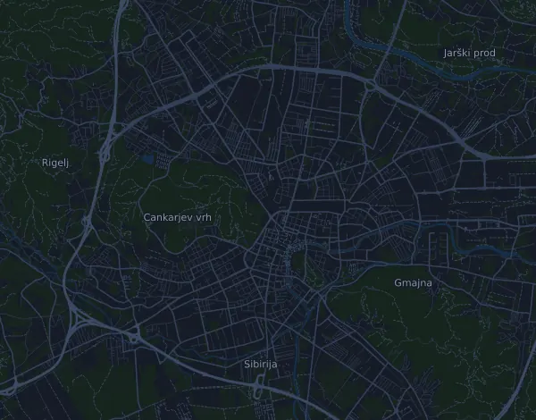

Heineken 0.0 Ljubljana Marathon (42,195 km)
- Distance
- 42,3 km
- Dénivelé positif
- ↑ 96 m
- Point culminant
- 315 m d’altitude
- Terrain
- Route
- Profil
- Plat
- Ravitaillements
- 14
Profil d’altitude
Prépare-toi avec Mila
Mila est une app avec un coach de course à pied. Ajoute une course à ton plan : le coach planifie tes semaines jusqu’au départ selon ta forme, et te donne un pronostic de temps et un plan pour l’allure, l’hydratation et l’énergie sur le parcours.

La bonne séance. Le bon jour.
Le parcours

À propos du parcours
Heineken 0.0 Ljubljana Marathon (42,195 km) est une course sur route de 42,3 km (Ljubljana, Slovénie). Le parcours compte 96 m de dénivelé positif et 97 m de dénivelé négatif, soit 2,3 m par km : il est donc plat. Le point culminant est à 315 m d’altitude et le point le plus bas à 285 m.
Le parcours ne compte aucune montée continue de 25 m ou plus.
L’organisateur prévoit 14 ravitaillements, le premier au km 5,0 et le dernier au km 40,0.
Dans l’app Mila, le coach décrit le parcours en détail dans ta langue et planifie ton allure et ton ravitaillement.
Avant le départ
Ravitaillements
| Au | Ce qu’on y trouve |
|---|---|
| km 5,0 | eau, boisson énergétique, gels, nourriture |
| km 10,0 | eau, boisson énergétique, gels, nourriture |
| km 12,5 | eau |
| km 15,0 | eau, boisson énergétique, gels, nourriture |
| km 17,5 | eau |
| km 20,0 | eau, boisson énergétique, gels, nourriture |
| km 22,5 | eau |
| km 25,0 | eau, boisson énergétique, gels, nourriture |
| km 27,5 | eau |
| km 30,0 | eau, boisson énergétique, gels, nourriture |
| km 32,5 | eau |
| km 35,0 | eau, boisson énergétique, gels, nourriture |
| km 37,5 | eau |
| km 40,0 | eau, boisson énergétique, gels, nourriture |
Source : ljubljanskimaraton.si, consulté le 15 octobre 2026
Tableau d’allures
Heineken 0.0 Ljubljana Marathon (42,195 km) en 3:00:00 – allure au km et temps de passage
4:15 min/km · km 10 : 42:33 · km 21,1 : 1:29:46 · km 30 : 2:07:38 · km 40 : 2:50:10 · arrivée : 3:00:00
Heineken 0.0 Ljubljana Marathon (42,195 km) en 3:30:00 – allure au km et temps de passage
4:58 min/km · km 10 : 49:38 · km 21,1 : 1:44:44 · km 30 : 2:28:54 · km 40 : 3:18:32 · arrivée : 3:30:00
Heineken 0.0 Ljubljana Marathon (42,195 km) en 4:00:00 – allure au km et temps de passage
5:40 min/km · km 10 : 56:43 · km 21,1 : 1:59:41 · km 30 : 2:50:10 · km 40 : 3:46:54 · arrivée : 4:00:00
Heineken 0.0 Ljubljana Marathon (42,195 km) en 4:30:00 – allure au km et temps de passage
6:23 min/km · km 10 : 1:03:49 · km 21,1 : 2:14:39 · km 30 : 3:11:27 · km 40 : 4:15:16 · arrivée : 4:30:00
Les temps supposent une allure régulière du début à la fin. C’est un simple calcul, pas un pronostic : dans les montées, dans la foule et aux ravitaillements, l’allure varie.
Questions fréquentes
Quand a lieu Heineken 0.0 Ljubljana Marathon (42,195 km) ?
La course a eu lieu le dimanche 18 octobre 2026. La date de la prochaine édition n’est pas encore fixée.
Heineken 0.0 Ljubljana Marathon (42,195 km) : quelle distance et quel dénivelé ?
La course fait 42,3 km, avec 96 m de dénivelé positif et 97 m de dénivelé négatif. Le point culminant est à 315 m d’altitude.
Heineken 0.0 Ljubljana Marathon (42,195 km) : à quoi ressemble le parcours ?
Le parcours est plat, avec 2,3 m de dénivelé par km en moyenne. Il ne compte aucune montée continue de 25 m ou plus. Il va du départ à une arrivée située ailleurs. On y court sur route.
Heineken 0.0 Ljubljana Marathon (42,195 km) : y a-t-il des ravitaillements ?
Oui. L’organisateur prévoit 14 ravitaillements : km 5,0 (eau, boisson énergétique, gels, nourriture) ; km 10,0 (eau, boisson énergétique, gels, nourriture) ; km 12,5 (eau) ; km 15,0 (eau, boisson énergétique, gels, nourriture) ; km 17,5 (eau) ; km 20,0 (eau, boisson énergétique, gels, nourriture) ; km 22,5 (eau) ; km 25,0 (eau, boisson énergétique, gels, nourriture) ; km 27,5 (eau) ; km 30,0 (eau, boisson énergétique, gels, nourriture) ; km 32,5 (eau) ; km 35,0 (eau, boisson énergétique, gels, nourriture) ; km 37,5 (eau) ; km 40,0 (eau, boisson énergétique, gels, nourriture).
Heineken 0.0 Ljubljana Marathon (42,195 km) : comment gérer mon allure ?
Vise un effort régulier du début à la fin, et retiens-toi sur les premiers kilomètres, quand les jambes sont fraîches et que le peloton part vite. Le parcours est plat, une allure régulière au kilomètre convient donc bien. Dans Mila, tu obtiens un plan d’allure pour ce parcours, adapté à ta forme.
D’autres courses de ce type
Autres courses à proximité
- Athens Marathon. The Authentic – Marathon 42,2 km8 novembre 2026 · Marathon, Grèce
- Behobia – San Sebastián 20,2 km8 novembre 2026 · Behobia, Espagne
- Marathon des Alpes-Maritimes Nice-Cannes – Marathon 42,5 km8 novembre 2026 · Nice, France
Prépare-toi avec Mila
La bonne séance. Le bon jour.
Les informations proviennent du fichier du parcours et de l’organisateur. Vérifie la date, les heures de départ et le règlement auprès de l’organisateur.
Mila n’est ni affiliée à l’organisateur ou aux sponsors de la course, ni sponsorisée ou approuvée par eux. Les noms et les marques appartiennent à leurs propriétaires. Organisateur ou ayant droit ? Demander une modification ou un retrait